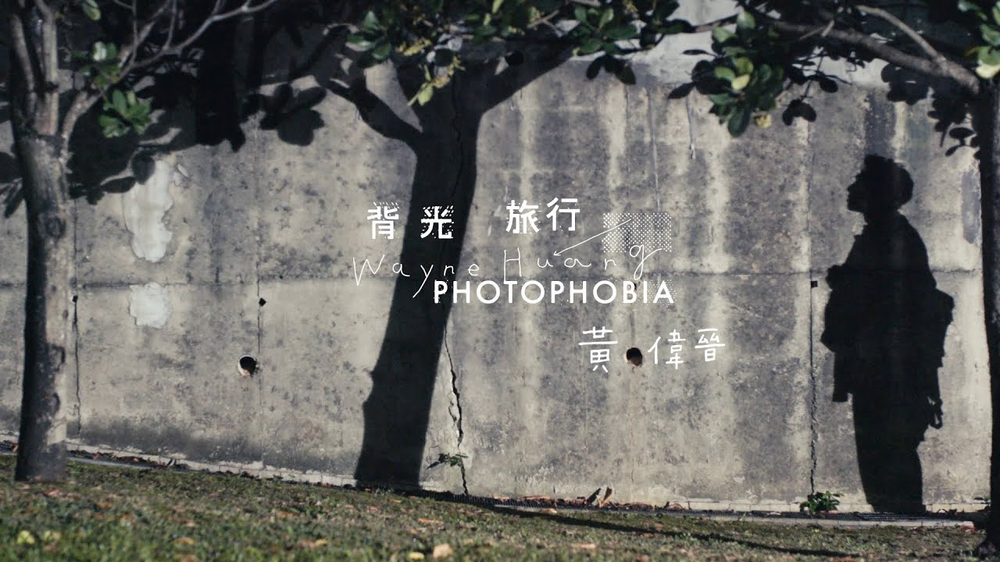

2020年3月23日，在30歲生日當天，正式發行個人首張EP《背光旅行》。
 6月2日，與采子合作單曲《前任》
8月7日、8月8日，舉辦個人音樂會「黃偉晉 背光旅行 音樂會」。
8月8日，與婁峻碩共同創作單曲《everyday》。
8月9日，《背光旅行》在YouTube突破100萬觀看次數。
12月15日，與邱鋒澤推出第二首共同創作單曲《潛台詞》。
2021年3月21日，舉辦個人生日會「《Lullaby 啦啦唄》生日音樂會」。
2021年11月26日，與《Voice Up 讚聲》合作舉辦《黃偉晉 暗室說 讚聲音樂會》。
12月24日，發售個人首張正規專輯《CreaLife》，但數位時間為同月20日發行。
2022年3月19、20日舉辦首張個人專輯《CreaLife》專輯簽唱會。
9月18日舉辦個人首張專輯《CreaLife》台北演唱會「CreaLife Live Tour」。
9月18日，於個人首張專輯《CreaLife》台北演唱會「CreaLife Live Tour」宣布11月12日在高雄後台、11月13日到台中Legacy開唱，門票9月24日開賣。
實境秀：娛樂百分百-叮咚五堅情1～3季